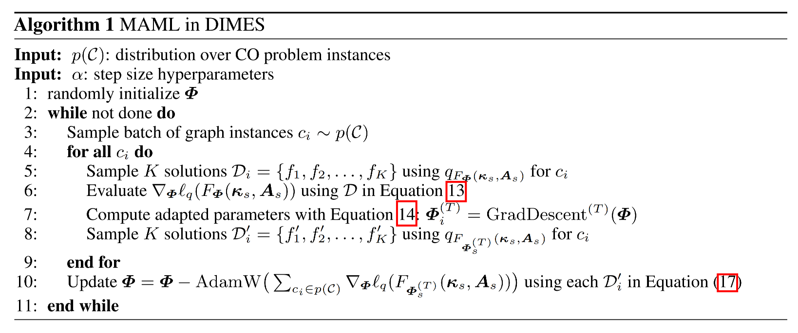
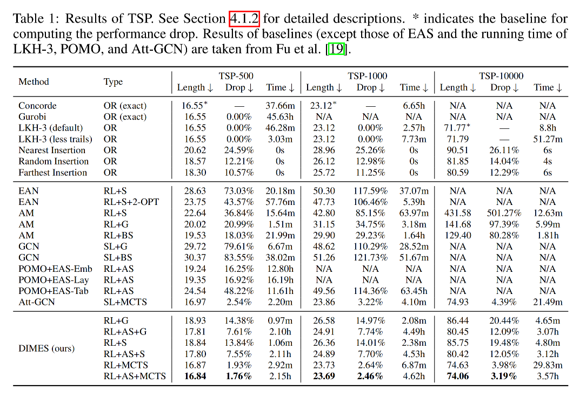

Paper Reading #7: DIMES
Last updated on November 6, 2025 am
本文将精读论文 “DIMES: A Differentiable Meta Solver for Combinatorial Optimization Problems”，作者 Qiu et al.，时间 2022 年，链接 arXiv:2210.04123。
论文概述
这篇论文发表在 NeurIPS 2022 上，提出了 DIfferentiable MEta Solver（DIMES）这一模型，旨在解决 ML4CO 的可扩展性问题。很多 RL4CO 方法在节点数较少（例如几百个节点）的问题上表现出色，但一旦问题规模扩大到数千甚至数万个节点，这些方法要么效果急剧下降，要么计算时间变得无法接受。DIMES 提出了一种全新的思路来应对这个挑战，并且取得了非常号的效果。文章在大规模的 TSP 和 MIS 问题上进行了实验。
Abstract
Recently, deep reinforcement learning (DRL) models have shown promising results in solving NP-hard Combinatorial Optimization (CO) problems. However, most DRL solvers can only scale to a few hundreds of nodes for combinatorial optimization problems on graphs, such as the Traveling Salesman Problem (TSP). This paper addresses the scalability challenge in large-scale combinatorial optimization by proposing a novel approach, namely, DIMES. Unlike previous DRL methods which suffer from costly autoregressive decoding or iterative refinements of discrete solutions, DIMES introduces a compact continuous space for parameterizing the underlying distribution of candidate solutions. Such a continuous space allows stable REINFORCE-based training and fine-tuning via massively parallel sampling. We further propose a meta-learning framework to enable effective initialization of model parameters in the fine-tuning stage. Extensive experiments show that DIMES outperforms recent DRL-based methods on large benchmark datasets for Traveling Salesman Problems and Maximal Independent Set problems.
为了解决 RL4CO 的可扩展性问题，DIMES 抛弃了传统的自回归解码方式，而是提出了一个新的方案：先用 GNN 一次性地为问题的每个决策变量（例如 TSP 中的每条边）生成一个连续的参数，这些参数共同定义了一个解的概率分布（一个紧凑的连续空间），再从这个概率分布中并行、高效地采样出完整的解，而无需逐步构建。这里需要注意，这边 GNN 的用法和之前的 GCN4TSP 不同，并不用于监督学习。
Introduction
在介绍中，作者着重强调了 RL4CO 的可扩展性问题。传统的 RL4CO 求解器需要一步一步地决策，这个过程的计算成本与问题规模大致成线性关系。当节点数很大时，不但解码时间会很长，还会遇到奖励稀疏的问题，导致训练不稳定，收敛困难。
为了解决这个问题，DIMES 使用了一个紧凑的连续空间来参数化候选解的概率分布，这个使得解码过程可以并行地进行，同时可以减小 REINFORCE 中的梯度方差。同时，作者还提出了一个元学习框架，能在微调之前有效地初始化模型参数。
模型
紧凑的连续空间参数化
我们理想中的损失函数是：
也就是我们想找到一个参数 ，使得从 中采样出的解 的期望成本 最小。其中， 由下式给出，
采样 在实际中是不现实的，因为其归一化因子需要对所有可行解求和，但可行解是指数级的，在计算上不可行。
因此，作者提出了一个易于采样的辅助分布（auxiliary distribution）。它同样由 参数化，并且我们的目标是让 也能引导我们找到低成本的解 。此时的损失函数变为：
对应的策略梯度公式为：
DIMES 用一个 GNN 来为每个决策变量生成一个实数值 。
- 对于 TSP，GNN 的输出是一个 的矩阵 ，其中 代表从城市 前往城市 的可能性。这个矩阵就定义了所有可能路径的一个概率分布。
- 对于 MIS，GNN 的输出是一个长度为 的向量 ， 代表节点 被选入独立集的可能性。
而本节接下来的部分，就是 的具体设计。
TSP 的辅助分布
对于 TSP 问题，考虑每个节点均匀地作为起点的情况。
选定了起点之后，按照链式法则构建一个解出现的概率，其中每一步都基于 矩阵通过 Softmax 选择下一个城市。
这与 GCN4TSP 的采样解码非常像， 的值越大，这条边被采样的概率越大。这种构建方式也是逐步构建，但每一步只需要查 矩阵 来选择节点，避免了自回归的过程。
MIS 的辅助分布构建非常类似，只是将 TSP 中的边改成顶点，在此不再赘述。
元学习框架
直接在上万个节点的大图上训练一个 GNN 是非常困难的。作者巧妙地将 MAML (Model-Agnostic Meta-Learning) 的思想引入进来。
在 DIMES 的框架里，每一个不同的问题实例都被视为一个独立的任务。
- 在元训练 (Meta-Train) 阶段，目标是学习一个 GNN 的初始参数 ，这个 具有很好的泛化能力，能够作为一个优秀的起点，快速适应任何一个新的、未见过的任务（问题实例）。
- 在元测试/微调 (Meta-Test / Fine-tuning) 阶段：当遇到一个具体的测试实例 时，首先用元训练好的 GNN 参数 生成初始的连续参数 。然后，在这个具体的实例 上，通过 REINFORCE 算法进行若干步梯度更新，对模型参数进行微调，得到针对该实例的特化参数 和 。
- 最终，使用微调后的参数 进行采样或贪心解码，得到最终解。

实验及其结果
文章在 TSP 和 MIS 问题上做了测试，其问题规模非常之大。以 TSP 问题为例，其规模达到了 500、1000 甚至 10000 个节点，这在之前的文章中很少见。TSP 问题采用 uniform 分布，MIS 采用 ER 和 SATLIB。

在 TSP-10000 问题上，DIMES 能够给出高质量的解（与 LKH-3 的差距仅为 3.19%），而之前大多数 RL4CO 方法在这个规模上根本无法运行或结果很差。